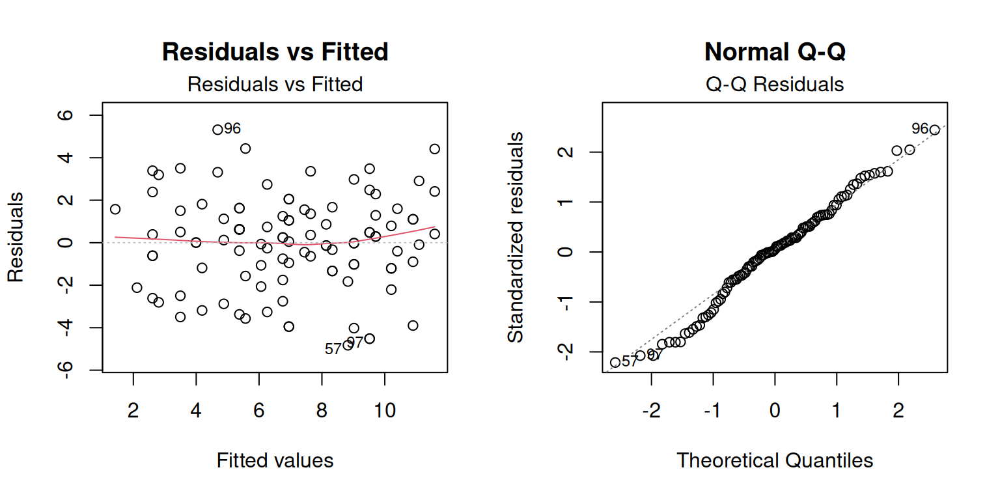
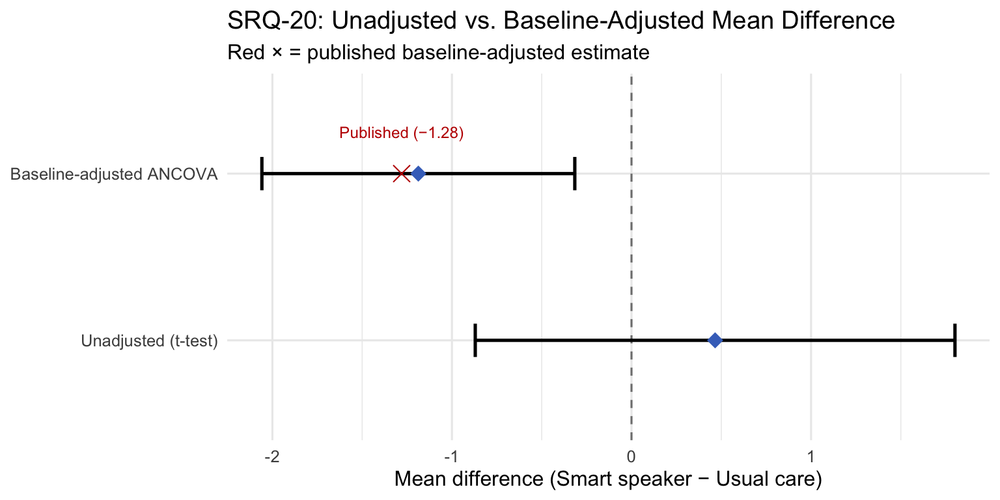

library(dplyr)
library(ggplot2)6 Module 5: Linear Regression and ANCOVA
CRP 241 — IVAM-ED Teaching Case
6.1 Overview
In Module 4 we used an unadjusted t-test to compare groups at follow-up. The pre-specified primary analysis in the IVAM-ED protocol used a different approach: ANCOVA (Analysis of Covariance) — a linear regression model that includes the baseline value of the outcome as a covariate alongside the treatment group indicator.
By the end of this module you should be able to:
- Explain why adjusting for baseline improves precision without introducing bias.
- Fit a baseline-adjusted ANCOVA model using
lm()and interpret the treatment coefficient. - Fit the fully-adjusted model with additional covariates and compare it to the baseline-adjusted model.
- Report results in the format used in the published paper (Table 2).
- Understand what “adjusted mean” means and how it differs from an observed mean.
6.2 Setup
dat <- readRDS("../data/ivam_working.rds")
completers <- filter(dat, missing_12wk == 0) # 103 participants6.3 1. Why Adjust for Baseline?
When participants are randomized, the two groups are expected to be balanced at baseline on average — but in any finite sample, chance imbalances occur. In our simulated data (and the real IVAM-ED trial), the intervention group started with a slightly higher SRQ-20 score than the control group.
Two consequences of baseline imbalance:
The unadjusted mean difference is biased. If the intervention group starts higher, regression to the mean will push them down more, even without a real treatment effect. Adjusting for baseline removes this confounding.
Adjusting for baseline increases precision. Because baseline scores are strongly correlated with follow-up scores, including the baseline as a covariate reduces residual variance. This makes confidence intervals narrower and tests more powerful — for free, without collecting additional data.
# How strongly correlated are baseline and follow-up SRQ-20?
with(completers, round(cor(srq20_0, srq20_12, use = "complete.obs"), 3))[1] 0.748
Note
Interpreting the correlation: A value near 0.7 means that knowing a participant’s baseline score explains about 49% of the variance in their follow-up score (r² = 0.70² ≈ 0.49). Including the baseline in the regression model can therefore reduce the residual variance by roughly half, which substantially narrows the confidence interval for the treatment effect.
6.4 2. The Baseline-Adjusted ANCOVA Model
The baseline-adjusted ANCOVA model includes two predictors: - group: the randomized treatment assignment (1 = intervention, 0 = control) - srq20_0: the participant’s SRQ-20 score at baseline
# Baseline-adjusted model: y_12 ~ group + y_0
model_base <- lm(srq20_12 ~ group + srq20_0, data = completers)
summary(model_base)
Call:
lm(formula = srq20_12 ~ group + srq20_0, data = completers)
Residuals:
Min 1Q Median 3Q Max
-4.8267 -1.2076 0.1222 1.4317 5.3160
Coefficients:
Estimate Std. Error t value Pr(>|t|)
(Intercept) 2.61270 0.49443 5.284 7.41e-07 ***
group -1.18712 0.43919 -2.703 0.00808 **
srq20_0 0.69045 0.05789 11.928 < 2e-16 ***
---
Signif. codes: 0 '***' 0.001 '**' 0.01 '*' 0.05 '.' 0.1 ' ' 1
Residual standard error: 2.207 on 100 degrees of freedom
Multiple R-squared: 0.5892, Adjusted R-squared: 0.581
F-statistic: 71.71 on 2 and 100 DF, p-value: < 2.2e-16# Extract the key estimates in a clean format
coef_base <- summary(model_base)$coefficients
ci_base <- confint(model_base)
results_base <- data.frame(
Term = rownames(coef_base),
Estimate = round(coef_base[, "Estimate"], 3),
SE = round(coef_base[, "Std. Error"], 3),
`95% CI` = paste0("(", round(ci_base[, 1], 2), ", ", round(ci_base[, 2], 2), ")"),
`p-value` = round(coef_base[, "Pr(>|t|)"], 4),
check.names = FALSE
)
results_base Term Estimate SE 95% CI p-value
(Intercept) (Intercept) 2.613 0.494 (1.63, 3.59) 0.0000
group group -1.187 0.439 (-2.06, -0.32) 0.0081
srq20_0 srq20_0 0.690 0.058 (0.58, 0.81) 0.0000
Note
Interpreting the group coefficient (the treatment effect):
- This is the estimated mean difference in SRQ-20 at 12 weeks between the intervention and control groups, holding baseline SRQ-20 constant.
- A negative value means the intervention group had lower distress (better outcome).
- Compare this to the unadjusted mean difference from Module 4. The ANCOVA estimate should be larger in magnitude because it corrects for the baseline imbalance (intervention group started higher).
- The 95% CI should be narrower than the unadjusted CI, reflecting the increased precision from including the baseline covariate.
Published baseline-adjusted MD: −1.28 (95% CI: −2.51 to −0.04). Your estimate will be close but not identical because this is a simulation.
Tip
Why the intercept must be calibrated at the grand mean — and what went wrong the first time: When building the synthetic dataset, the ANCOVA intercept was initially calibrated at the control group’s baseline mean rather than the grand mean. A 1.1-point baseline imbalance almost completely offset the specified treatment effect, making the raw follow-up means nearly identical between groups. The fix — centering the baseline covariate at the grand mean — is exactly what this section demonstrates: adjusted means are estimated at the grand mean, not the group mean. See simulation-refinements.md for the full diagnosis and the before/after code.
6.5 2b. Check Model Assumptions
Before interpreting ANCOVA results, verify the two key linear regression assumptions: residuals are approximately normally distributed, and residual variance is roughly constant across fitted values (homoscedasticity).
# Standard residual diagnostic plots for the baseline-adjusted ANCOVA
par(mfrow = c(1, 2))
# Residuals vs Fitted: check for non-linearity and unequal variance
plot(model_base, which = 1,
main = "Residuals vs Fitted",
sub = "Look for: random scatter (no curve, no funnel shape)")
# Normal Q-Q: check whether residuals are approximately normal
plot(model_base, which = 2,
main = "Normal Q-Q",
sub = "Look for: points close to the diagonal line")
par(mfrow = c(1, 1))
Note
Reading the diagnostic plots:
- Residuals vs Fitted (left): The residuals should scatter randomly above and below zero with no systematic curve and no funnel shape (which would indicate variance increasing with fitted values). A smooth red line near zero is a good sign.
- Normal Q-Q (right): The standardized residuals should fall approximately on the diagonal line. Some deviation at the tails is acceptable in small samples; systematic curvature throughout the plot would indicate non-normality.
For the IVAM-ED simulation, both plots should look acceptable. The SRQ-20 is a bounded integer score with some right skew — slight departures from normality in the Q-Q plot tails are expected and not cause for concern with n = 103.
6.6 3. Adjusted Means
The ANCOVA model produces adjusted means — the estimated group means at follow-up after accounting for baseline differences. These are what the paper reports in Table 2 as “Adjusted mean (SE)”.
The adjusted means are evaluated at the grand mean of the baseline covariate (not the group-specific mean). This removes the effect of any baseline imbalance.
# Grand mean of baseline SRQ-20 across all completers
grand_mean_srq20 <- mean(completers$srq20_0)
cat("Grand mean of baseline SRQ-20:", round(grand_mean_srq20, 2), "\n\n")Grand mean of baseline SRQ-20: 7.19 # Adjusted means: predict at grand mean of baseline, for each group
adj_means <- predict(
model_base,
newdata = data.frame(
group = c(0, 1),
srq20_0 = c(grand_mean_srq20, grand_mean_srq20)
),
se.fit = TRUE
)
cat("Adjusted mean (SE) — Usual care: ",
round(adj_means$fit[1], 2), "(", round(adj_means$se.fit[1], 2), ")\n")Adjusted mean (SE) — Usual care: 7.58 ( 0.31 )cat("Adjusted mean (SE) — Smart speaker: ",
round(adj_means$fit[2], 2), "(", round(adj_means$se.fit[2], 2), ")\n")Adjusted mean (SE) — Smart speaker: 6.39 ( 0.31 )cat("\nPublished (Table 2): Usual care 7.66 (0.43), Smart speaker 6.39 (0.45)\n")
Published (Table 2): Usual care 7.66 (0.43), Smart speaker 6.39 (0.45)
Note
Why adjusted means differ from raw means: The raw follow-up means reflect which participants ended up in each group, including any baseline imbalance. The adjusted means represent what the expected follow-up score would be for a “typical” participant (at the grand mean of the baseline) in each group.
6.7 4. The Fully Adjusted Model
The protocol specified a fully adjusted model that additionally controls for: age, sex, years of education, individual income, and MMSE score. These variables are included to account for any remaining between-group differences that could influence the outcome.
# Fully adjusted model: adds age, sex, education, income, MMSE as covariates
model_full <- lm(
srq20_12 ~ group + srq20_0 + age + female + edu_years + income_wages + mmse_0,
data = completers
)
summary(model_full)
Call:
lm(formula = srq20_12 ~ group + srq20_0 + age + female + edu_years +
income_wages + mmse_0, data = completers)
Residuals:
Min 1Q Median 3Q Max
-4.5828 -1.2808 0.1698 1.3799 5.3337
Coefficients:
Estimate Std. Error t value Pr(>|t|)
(Intercept) 4.54577 3.63377 1.251 0.2140
group -1.10707 0.45396 -2.439 0.0166 *
srq20_0 0.70205 0.05998 11.705 <2e-16 ***
age -0.02763 0.04848 -0.570 0.5700
female -0.46403 0.46959 -0.988 0.3256
edu_years -0.05649 0.06344 -0.890 0.3755
income_wages -0.13485 0.10606 -1.271 0.2067
mmse_0 0.04077 0.06523 0.625 0.5334
---
Signif. codes: 0 '***' 0.001 '**' 0.01 '*' 0.05 '.' 0.1 ' ' 1
Residual standard error: 2.22 on 95 degrees of freedom
Multiple R-squared: 0.6053, Adjusted R-squared: 0.5762
F-statistic: 20.81 on 7 and 95 DF, p-value: < 2.2e-16coef_full <- summary(model_full)$coefficients
ci_full <- confint(model_full)
data.frame(
Term = rownames(coef_full),
Estimate = round(coef_full[, "Estimate"], 3),
SE = round(coef_full[, "Std. Error"], 3),
`95% CI` = paste0("(", round(ci_full[, 1], 2), ", ", round(ci_full[, 2], 2), ")"),
`p-value` = round(coef_full[, "Pr(>|t|)"], 4),
check.names = FALSE
) Term Estimate SE 95% CI p-value
(Intercept) (Intercept) 4.546 3.634 (-2.67, 11.76) 0.2140
group group -1.107 0.454 (-2.01, -0.21) 0.0166
srq20_0 srq20_0 0.702 0.060 (0.58, 0.82) 0.0000
age age -0.028 0.048 (-0.12, 0.07) 0.5700
female female -0.464 0.470 (-1.4, 0.47) 0.3256
edu_years edu_years -0.056 0.063 (-0.18, 0.07) 0.3755
income_wages income_wages -0.135 0.106 (-0.35, 0.08) 0.2067
mmse_0 mmse_0 0.041 0.065 (-0.09, 0.17) 0.5334
Note
Comparing baseline-adjusted vs. fully adjusted:
- The treatment effect (
groupcoefficient) may change slightly between the two models. In the published paper, the fully adjusted MD was −1.46 (95% CI: −2.73 to −0.19) versus −1.28 baseline-adjusted — slightly larger after full adjustment. - Adding more covariates can either increase or decrease the treatment estimate depending on whether those covariates are positively or negatively correlated with both group assignment and the outcome.
- The primary advantage of the fully adjusted model is further precision gain when the additional covariates explain residual variance.
6.8 5. Replicating Table 2: All Outcomes
The paper’s Table 2 reports baseline-adjusted and fully adjusted results for all five outcomes. Here we fit the baseline-adjusted model for each and compile the results.
# Helper: fit ANCOVA for one outcome and return a tidy summary row
ancova_row <- function(data, outcome_12, outcome_0, label) {
fmla <- as.formula(paste(outcome_12, "~", "group +", outcome_0))
m <- lm(fmla, data = data)
ci <- confint(m)["group", ]
coef_row <- coef(summary(m))["group", ]
data.frame(
Outcome = label,
MD = round(coef_row["Estimate"], 2),
SE = round(coef_row["Std. Error"], 2),
`CI lower` = round(ci[1], 2),
`CI upper` = round(ci[2], 2),
`p-value` = round(coef_row["Pr(>|t|)"], 3),
check.names = FALSE
)
}
table2 <- bind_rows(
ancova_row(completers, "srq20_12", "srq20_0", "SRQ-20 (primary)"),
ancova_row(completers, "sf36_12", "sf36_0", "SF-36 (quality of life)"),
ancova_row(completers, "sci_r_12", "sci_r_0", "SCI-R (self-care)"),
ancova_row(completers, "pss_12", "pss_0", "PSS (perceived stress)"),
ancova_row(completers, "hba1c_12", "hba1c_0", "HbA1c %")
)
table2 Outcome MD SE CI lower CI upper p-value
Estimate...1 SRQ-20 (primary) -1.19 0.44 -2.06 -0.32 0.008
Estimate...2 SF-36 (quality of life) 5.95 2.97 0.05 11.85 0.048
Estimate...3 SCI-R (self-care) 1.39 0.94 -0.48 3.26 0.142
Estimate...4 PSS (perceived stress) -3.28 1.57 -6.39 -0.16 0.040
Estimate...5 HbA1c % -0.54 0.21 -0.96 -0.12 0.012# Published baseline-adjusted results (Table 2, Matzenbacher et al. 2026)
# for comparison
published <- data.frame(
Outcome = c("SRQ-20 (primary)", "SF-36 (quality of life)",
"SCI-R (self-care)", "PSS (perceived stress)", "HbA1c %"),
MD_pub = c(-1.28, 9.46, 3.40, -3.00, -0.48),
CI_pub = c("(-2.51, -0.04)", "(3.65, 15.26)", "(1.61, 5.19)",
"(-6.20, 0.20)", "(-0.85, -0.11)"),
p_pub = c(0.04, 0.001, "<0.001", 0.07, 0.01)
)
published Outcome MD_pub CI_pub p_pub
1 SRQ-20 (primary) -1.28 (-2.51, -0.04) 0.04
2 SF-36 (quality of life) 9.46 (3.65, 15.26) 0.001
3 SCI-R (self-care) 3.40 (1.61, 5.19) <0.001
4 PSS (perceived stress) -3.00 (-6.20, 0.20) 0.07
5 HbA1c % -0.48 (-0.85, -0.11) 0.01
Note
Comparing your estimates to the published values: Your estimates should have the same sign and approximate magnitude as the published results. Exact matches are not expected — the simulation approximates, but does not reconstruct, the real data. The key patterns to confirm:
- SRQ-20: negative MD, p < 0.05 (significant)
- SF-36 and SCI-R: positive MD, p < 0.05 (significant)
- PSS: negative MD, p > 0.05 (not significant; CI should cross zero)
- HbA1c: negative MD, p < 0.05 (significant)
6.9 6. Visualizing Adjusted vs. Unadjusted Estimates
# Collect unadjusted and adjusted MDs for SRQ-20
unadj_t <- t.test(srq20_12 ~ group_label, data = completers)
unadj_est <- diff(rev(unadj_t$estimate)) # Smart speaker - Usual care
unadj_ci <- unadj_t$conf.int
adj_ci <- confint(model_base)["group", ]
adj_est <- coef(model_base)["group"]
compare <- data.frame(
Model = factor(c("Unadjusted (t-test)", "Baseline-adjusted ANCOVA"),
levels = c("Unadjusted (t-test)", "Baseline-adjusted ANCOVA")),
MD = c(unadj_est, adj_est),
lo = c(unadj_ci[1], adj_ci[1]),
hi = c(unadj_ci[2], adj_ci[2])
)
ggplot(compare, aes(x = MD, xmin = lo, xmax = hi, y = Model)) +
geom_vline(xintercept = 0, linetype = "dashed", color = "grey50") +
geom_errorbarh(height = 0.2, linewidth = 0.9) +
geom_point(size = 4, shape = 18, color = "#4472C4") +
annotate("point", x = -1.28, y = 2, size = 4, shape = 4,
color = "#C00000") +
annotate("text", x = -1.28, y = 2.25, label = "Published (−1.28)",
color = "#C00000", size = 3.2) +
labs(
title = "SRQ-20: Unadjusted vs. Baseline-Adjusted Mean Difference",
subtitle = "Red × = published baseline-adjusted estimate",
x = "Mean difference (Smart speaker − Usual care)",
y = NULL
) +
theme_minimal(base_size = 12)
Note
What to notice:
- The ANCOVA estimate should be larger in absolute value than the unadjusted estimate (the adjustment corrects for the baseline imbalance that attenuated the raw difference).
- The ANCOVA CI should be narrower (more precise), demonstrating the efficiency gain from baseline adjustment.
6.10 7. Practice Exercises
Coefficient interpretation. Write one sentence interpreting the
groupcoefficient from the baseline-adjusted ANCOVA as you would in a results section of a paper.Baseline coefficient. The
srq20_0coefficient in the ANCOVA model is approximately 0.70. What does this tell you about the relationship between baseline and follow-up SRQ-20 scores?Adjusted means by hand. Using the estimated coefficients from
model_base, predict the adjusted mean SRQ-20 at 12 weeks for a participant in the control group (group = 0) with a baseline SRQ-20 equal to the grand mean. Does this match the output from Section 3?Degrees of freedom. The baseline-adjusted model has 103 observations and estimates 3 coefficients (intercept, group, baseline). How many residual degrees of freedom does it have? Why does the fully adjusted model (7 coefficients) have fewer? What is the practical consequence of having fewer degrees of freedom?
6.11 Summary
In this module you:
- Explained why ANCOVA is preferred over an unadjusted t-test in a randomized trial with continuous outcomes.
- Fitted the baseline-adjusted ANCOVA and interpreted the treatment coefficient and adjusted means.
- Extended to the fully adjusted model with additional covariates.
- Reproduced the structure of the published Table 2 for all five outcomes.
- Visualized the precision gain from baseline adjustment.
Next: Module 6 examines missing data — how the 9 missing participants affect the analysis and what sensitivity analyses can tell us about robustness.
6.12 Session Information
sessionInfo()R version 4.6.1 (2026-06-24)
Platform: aarch64-apple-darwin23
Running under: macOS Tahoe 26.5.2
Matrix products: default
BLAS: /Library/Frameworks/R.framework/Versions/4.6/Resources/lib/libRblas.0.dylib
LAPACK: /Library/Frameworks/R.framework/Versions/4.6/Resources/lib/libRlapack.dylib; LAPACK version 3.12.1
locale:
[1] C.UTF-8/C.UTF-8/C.UTF-8/C/C.UTF-8/C.UTF-8
time zone: America/New_York
tzcode source: internal
attached base packages:
[1] stats graphics grDevices datasets utils methods base
other attached packages:
[1] ggplot2_4.0.3 dplyr_1.2.1
loaded via a namespace (and not attached):
[1] vctrs_0.7.3 cli_3.6.6 knitr_1.51 rlang_1.3.0
[5] xfun_0.60 otel_0.2.0 renv_1.2.3 generics_0.1.4
[9] S7_0.2.2 jsonlite_2.0.0 labeling_0.4.3 glue_1.8.1
[13] htmltools_0.5.9 scales_1.4.0 rmarkdown_2.31 grid_4.6.1
[17] evaluate_1.0.5 tibble_3.3.1 fastmap_1.2.0 yaml_2.3.12
[21] lifecycle_1.0.5 compiler_4.6.1 RColorBrewer_1.1-3 htmlwidgets_1.6.4
[25] pkgconfig_2.0.3 farver_2.1.2 digest_0.6.39 R6_2.6.1
[29] tidyselect_1.2.1 pillar_1.11.1 magrittr_2.0.5 withr_3.0.3
[33] tools_4.6.1 gtable_0.3.6